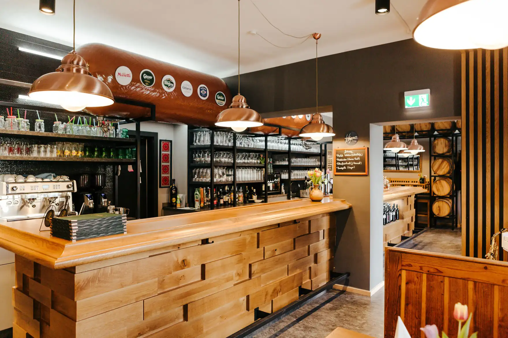
Acht Meter Eichenholz, zwanzig Weinfässer
Gasthof Dorrer
Wirtshaus am Stadtrand von Graz, geführt von Martin Dorrer. Steirische Küche, und seit dem Umbau 2023 eine Bar, für die man Platz braucht.
Das Haus
Fünf Generationen an der Steinbergstraße
Der Gasthof liegt in ländlicher Umgebung am Stadtrand von Graz. Eröffnet wurde er am 31. Mai 1898 von Martin und Theresia Gollupp, damals noch als Gasthaus Gollupp. Seit 1959 trägt er den Namen Dorrer.
Martin Dorrer hat Koch und Restaurantfachmann gelernt und unter anderem im haubengekrönten Casino Restaurant am Zuger See in der Schweiz und in einem Tiroler Fünfsternehaus gearbeitet. 2004 hat er den Familienbetrieb übernommen und steht seither selbst am Herd.
Denn das Glück des Lebens, ist das Glück des Gebens. Martin Dorrer, Februar 2023
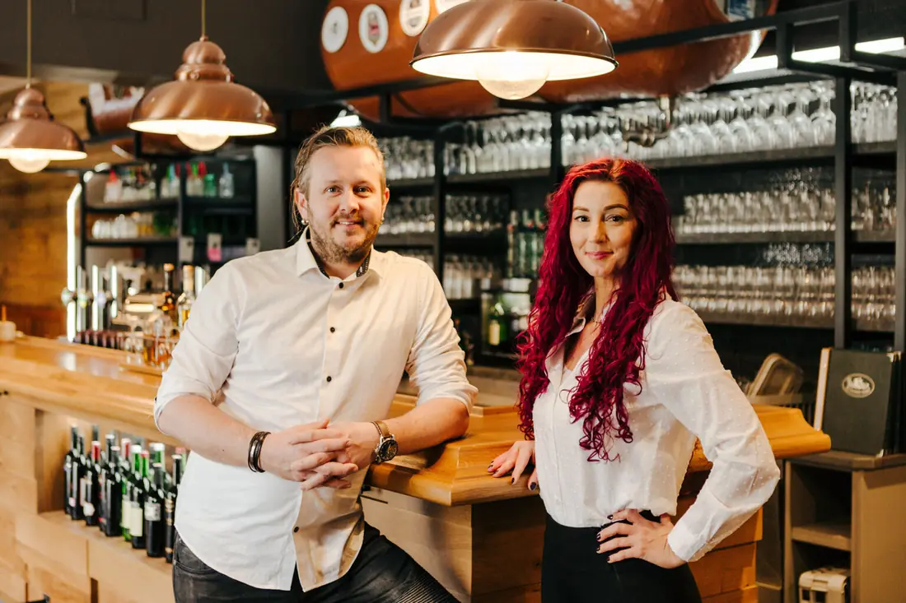
Umbau 2023
Die Eichenbar
Geplant ab 2019, umgesetzt im Frühjahr 2023. Aus jeder Generation ist ein Stück im Raum geblieben.
-
Acht Meter Eichenholz
Die Bar misst acht Meter in der Länge und ist von 20 Weinfässern umschmückt. Sie steht für die fünfte Generation.
-
Sitzbänke aus den 1950ern
Die Bänke stammen aus der Zeit, als die Großmutter den Kochlöffel führte. Aufbereitet, dazu neue massive Eichentische.
-
Vertäfelung vom Großvater
Das Holz an den Wänden hat rund 40 Jahre in der Scheune getrocknet. Gebürstet, naturbelassen, sonst unverändert.
-
Der Stammtisch
Stammtisch und Sitzecke sind wie eh und je geblieben. Sie stehen für die Generation der Eltern.
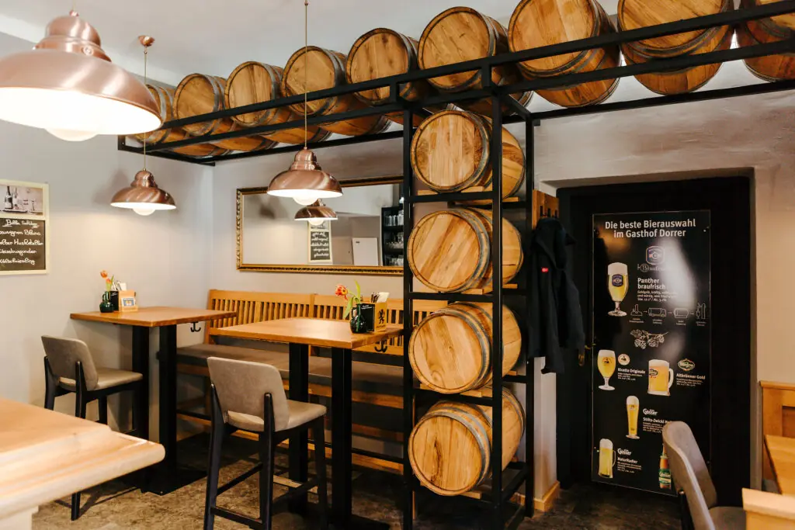
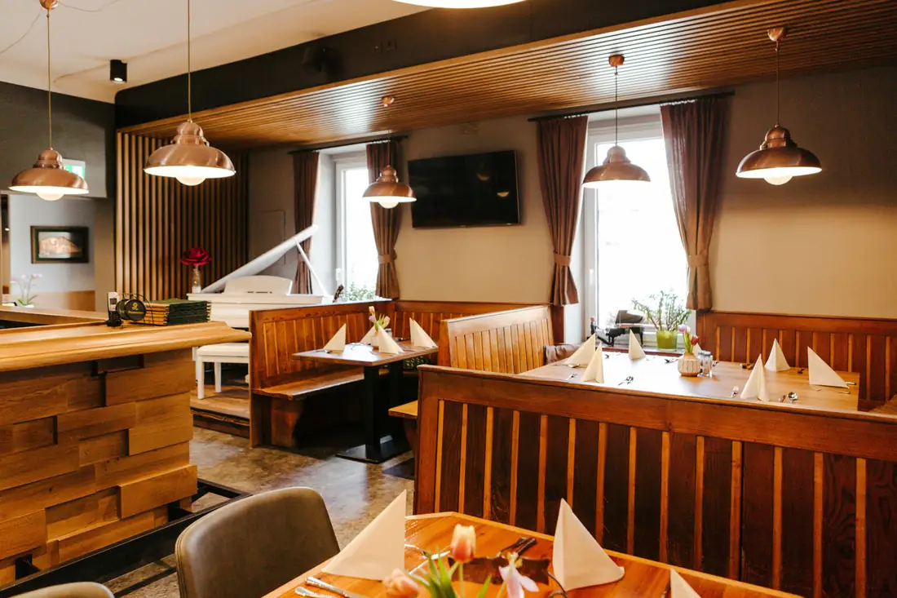
Auszug aus der Speisekarte
Küche
Steirisch und saisonal, dazu Fischklassiker und Gegrilltes. Die vollständige Karte liegt im Haus auf.
Fischklassiker
- Goldbrassenfilet an Tomatennudeln mit Sardellen und Rucola
- Gegrillte Calamari vom Rost mit Knoblauchbutter, Petersilienkartoffeln und Hausbrot
Vegetarische Gerichte
- Gnocchi in Tomatensauce mit Rucola und gegrilltem Schafskäse
- Teigtaschen gefüllt mit Ricotta und Rucola in brauner Butter und buntem Gemüse
Aus der vitalen Küche
- Hühnerbrustwürfel vom Grill auf buntem Blattsalat mit American Dressing, Toast und gegrillten Süßkartoffeln
- Backhendlsalat, Hühnerbruststreifen auf buntem Blattsalat mit Kernöl
Vom Grill
- Schweinskotelett, Hühnerbrust und Schweinefilet mit Buttergemüse und Farmer Pommes
- Beef Burger mit Speck und Cheddar, BBQ Sauce und Pommes frites
Hausgemachte Desserts
- Wechselnd, die Auswahl steht an der Tafel.
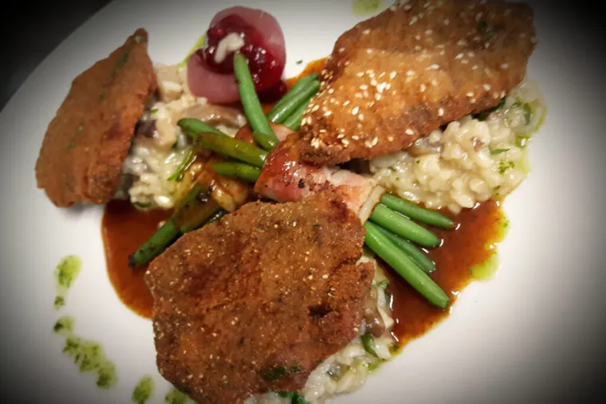
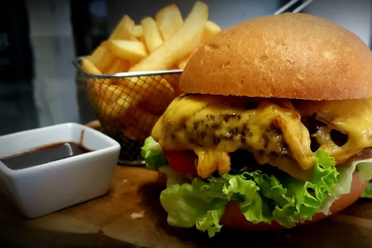
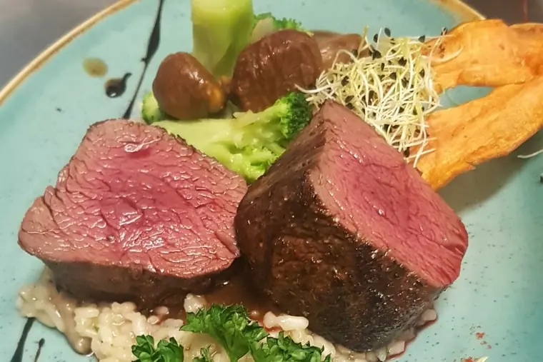
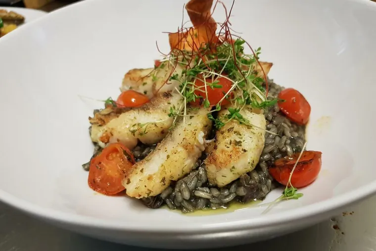
Kochen nach der Jahreszeit
- März und AprilBärlauch und Frühlingsgemüse
- Mai und JuniSpargel
- Juni und JuliEierschwammerl und Pilze
- AugustAlles vom Grill
- September bis NovemberKürbis und Wild
Steirische Partnerbetriebe
- GeflügelDraxler
- FleischHaring
- GemüseSihorsch
- EierFalzberger
- KaffeeMusetti
Seit 1898
Fünf Generationen
Aus dem Gasthaus Gollupp wurde 1959 der Gasthof Dorrer. Die sechste Generation wächst bereits heran.
-
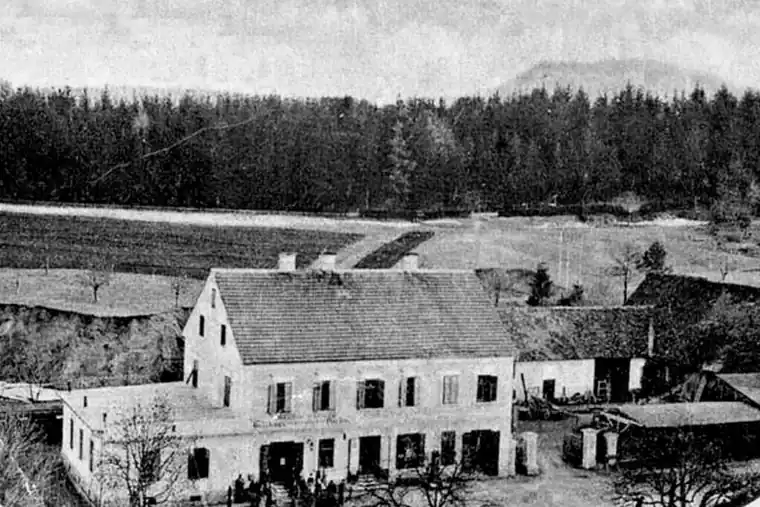
1898Martin und Theresia Gollupp eröffnen am 31. Mai das Gasthaus Gollupp. Dahinter stehen eine Ziegelbrennerei und eine Schmiede.
-
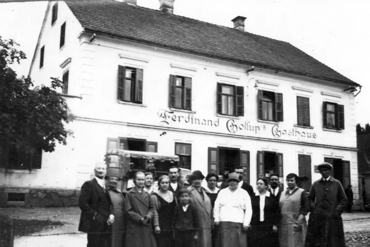
1937Sohn Ferdinand Gollupp übernimmt mit Elisabeth Zotter und führt den Betrieb bis zum 16. Dezember 1954.
-
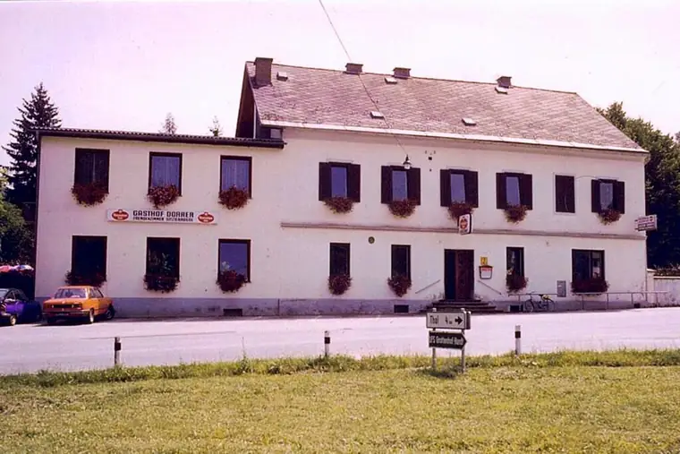
1959Am 4. September wird aus dem Gasthaus Gollupp der Gasthof Dorrer, geführt von Dora und Emmerich Dorrer.
-
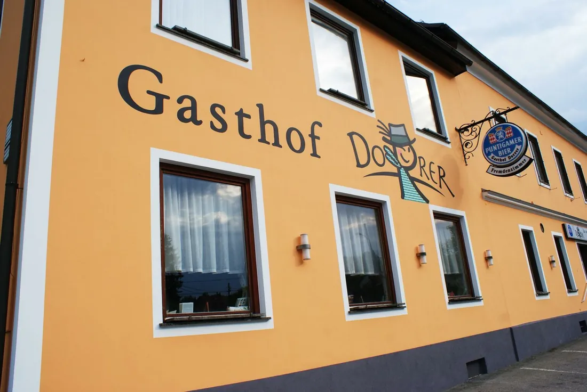
1981Ferdinand und Renate Dorrer leiten das Haus vom 14. November 1981 bis zum 30. August 2004.
-
2004
Martin Dorrer übernimmt in fünfter Generation und baut 2023 die Eichenbar.
Wann offen ist
Öffnungszeiten
| Tag | Haus | Küche |
|---|---|---|
| Montag | 09:00 bis 22:00 | 11:00 bis 21:00 |
| Dienstag | 09:00 bis 22:00 | 11:00 bis 21:00 |
| Mittwoch | Ruhetag | |
| Donnerstag | Ruhetag | |
| Freitag | 09:00 bis 22:00 | 11:00 bis 21:00 |
| Samstag | 09:00 bis 22:00 | 11:00 bis 21:00 |
| Sonntag | 09:00 bis 21:00 | 11:00 bis 20:00 |
An Feiertagen ist geöffnet.
Tisch bestellen
In wenigen Schritten reserviert
Datum, Uhrzeit und Personen wählen. Wir melden uns so schnell wie möglich.
- 1Tag und Uhrzeit wählen
- 2Personen und Bereich angeben
- 3Bestätigung per E-Mail
Lieber telefonisch? +43 316 582647
Ihr Mailprogramm wurde geöffnet. Die Reservierung geht erst ein, wenn Sie die vorbereitete Nachricht auch absenden. Sollte sich kein Fenster geöffnet haben, rufen Sie bitte unter +43 316 582647 an.
Kontakt
So finden Sie uns
- Adresse
- Steinbergstraße 41
8052 Graz
Auf der Karte ansehen - Telefon
- +43 316 582647
- Lage
- Am westlichen Stadtrand von Graz, in ländlicher Umgebung.
Google Maps
Die Karte wird erst auf Klick geladen. Dabei werden Daten an Google übertragen und Cookies gesetzt.